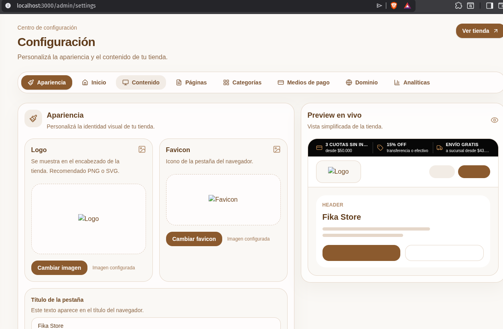
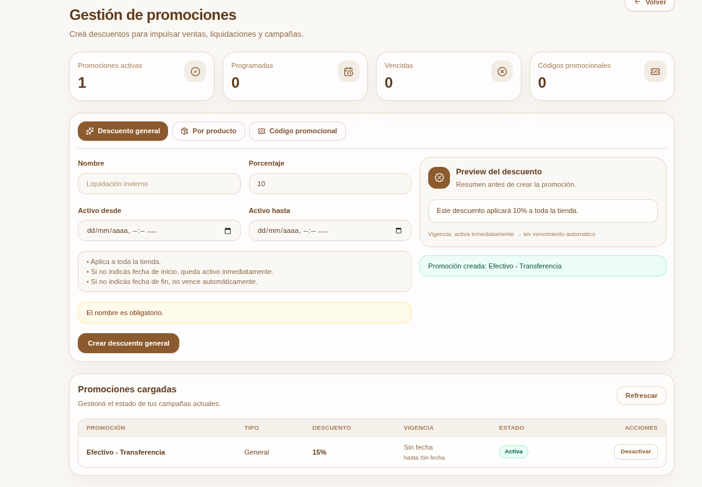
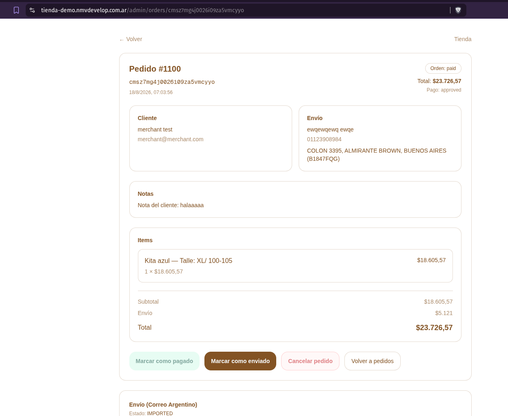
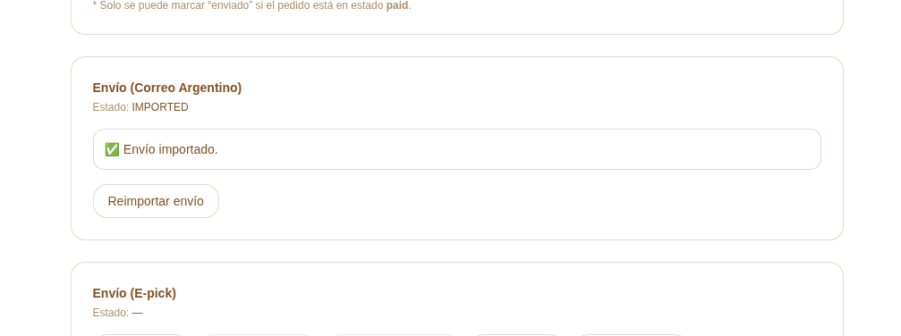
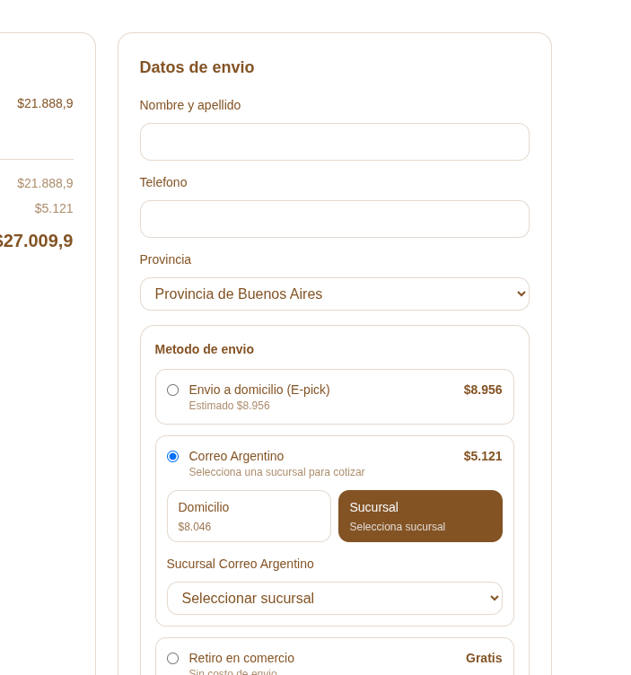

El panel se usa desde /admin. La navegación lateral organiza las funciones por áreas: General, Catálogo, Ventas y Sistema.

Ejemplo de panel administrativo con navegación por pestañas y preview de tienda.
Rol
Qué puede hacer
Merchant
Operar la tienda: productos, categorías, promociones, pedidos, envíos, arrepentimientos, mailing permitido y configuración visible.
Admin
Además de operar, puede ver opciones administrativas como alta de merchants, configuración técnica de proveedores y tokens manuales.
Customer
Cliente final. Compra, consulta pedidos, perfil y arrepentimientos desde la tienda.
Acceso rápido: desde el panel, el link Ver Tienda abre la tienda pública para revisar cómo ve el cliente los cambios.
2. Dashboard
El Dashboard resume el estado diario de la tienda y sirve como primera revisión operativa.
Qué muestra
Ventas del día, total de pedidos, clientes registrados y conversión estimada.
Alertas de pedidos pendientes, productos sin stock, promociones por vencer y mailing sin configurar.
Acciones rápidas: nuevo producto, nueva promoción, ver pedidos, enviar mailing y ver tienda.
Actividad reciente: pedidos, clientes, productos y promociones actualizadas.
Uso recomendado
Entrá al inicio del día y revisá alertas.
Priorizá pedidos pendientes o pagados.
Reponé productos con stock bajo o sin stock.
Verificá promociones próximas a vencer.
3. Productos y variantes
La sección Productos administra catálogo, precios, stock, imágenes, estado de publicación y variantes.
Vista de productos como la ve el cliente: tarjetas compactas, precio base, promoción y cuotas.
Listado de productos
Permite buscar por nombre, slug o descripción.
Permite filtrar por estado: todos, activos, inactivos, sin stock, stock bajo y con variantes.
Permite filtrar por categoría y ordenar por fecha, nombre, precio o stock.
Incluye exportación e importación XLSX.
Crear producto
Ir a Productos > Nuevo producto.
Cargar nombre, slug, descripción, precio, stock y categoría.
Definir variantes si corresponde, por ejemplo talle y diseño.
Subir imágenes y marcar el producto como activo si debe aparecer en la tienda.
Guardar.
Editar producto
Desde el listado, abrir el producto para editar datos generales.
Actualizar precios y stock por variante.
Activar o desactivar imágenes visibles por variante.
Crear nuevas variantes desde el editor.
Duplicar productos cuando se necesite partir de una ficha existente.
Importación XLSX
El importador acepta columnas como name, slug, description, price, stock e isActive. Si falta el slug, se genera desde el nombre.
Stock: el stock se descuenta al crear una orden. Si se cancela un pedido pagado o pendiente, el sistema repone las unidades.
4. Categorías
Las categorías organizan el catálogo y también pueden usarse en la home como accesos destacados.
Qué se puede hacer
Crear categorías principales y subcategorías.
Editar nombre, slug, descripción y categoría padre.
Eliminar categorías cuando ya no correspondan.
Reordenar categorías hermanas con drag and drop.
Filtrar por todas, principales, hijas o vacías.
Buenas prácticas
Usar nombres cortos y claros para navegación.
No borrar categorías con productos sin revisar primero el catálogo.
Mantener slugs simples, sin espacios ni símbolos.
5. Promociones
La sección Promociones permite crear descuentos generales, descuentos por producto y códigos promocionales.

Gestión de promociones: creación, preview, estado y acciones para editar o activar/desactivar.
Tipo
Uso
Descuento general
Aplica a toda la tienda. Sirve para campañas amplias o liquidaciones.
Por producto
Aplica solo a uno o más productos seleccionados.
Código promocional
El cliente debe ingresar el código en el carrito.
Campos principales
Nombre interno de la promoción.
Porcentaje de descuento.
Fechas de inicio y fin. Si no hay fecha de inicio, queda activa inmediatamente. Si no hay fecha de fin, no vence automáticamente.
Métodos de pago alcanzados: transferencia, efectivo, acordar, Mercado Pago u otros visibles.
Editar promociones cargadas
Ir al listado inferior de promociones.
Presionar Editar.
Ajustar porcentaje, fechas, productos o métodos de pago.
Guardar cambios.
En la tienda, los descuentos por transferencia o efectivo se muestran bajo el precio del producto y en el carrito, sin confundir el precio base con el precio final promocional.
6. Pedidos
Pedidos es el centro operativo de ventas. Desde ahí se filtran, revisan y actualizan las órdenes.

Detalle de pedido: datos de cliente, envío, items, total y acciones operativas.
Listado
Buscar por número de pedido, cliente, email o ID.
Filtrar por estado del pedido y estado de pago.
Ordenar por fecha, total o número de orden.
Entrar al detalle haciendo clic sobre la fila o en Ver pedido.
Estados principales
Estado
Significado
Acción típica
pending_payment
Pedido creado, pago no confirmado.
Esperar pago o marcar como pagado si corresponde.
paid
Pago aprobado o marcado manualmente.
Preparar envío.
shipped
Pedido marcado como enviado.
Seguir entrega.
delivered
Pedido entregado.
Cierre operativo.
cancelled
Pedido cancelado.
Stock repuesto si correspondía.
Detalle de pedido
Ver datos de cliente, dirección, notas, items, subtotal, envío y total.
Marcar como pagado cuando el pago se validó fuera de Mercado Pago.
Marcar como enviado cuando el pedido está pagado.
Cancelar pedidos pendientes o pagados. Al cancelar, el stock vuelve al catálogo.
Si el cliente devuelve un producto ya pagado, usar Cancelar pedido solo cuando corresponde cancelar la orden completa. Esto repone stock y cancela el estado de pago en la tienda.
7. Envíos y paquetería
La tienda soporta métodos de envío configurables: E-pick, Correo Argentino, Andreani, retiro en comercio y métodos personalizados.

Bloque de Correo Argentino dentro del pedido: estado, importación y acciones de seguimiento.
Paquetería
Desde Paquetería se activan o desactivan métodos disponibles para clientes.
El admin puede decidir qué proveedores ve el merchant.
Cada proveedor puede tener campos obligatorios de configuración.
Se pueden crear envíos de prueba para validar credenciales.
Correo Argentino
El cliente puede elegir domicilio o sucursal.
Las sucursales se ordenan priorizando cercanía al código postal ingresado por el cliente.
Desde el pedido se puede importar el envío a MiCorreo.
Si existe shippingId, se puede consultar tracking y guardar los eventos.
La API MiCorreo revisada no incluye endpoint público para cancelar envíos; la cancelación real se hace desde el portal MiCorreo.
E-pick
Permite crear envío, confirmar retiro, consultar tracking y obtener etiquetas A4 o 10x15.
El estado se sincroniza con la información devuelta por el proveedor.
Checkout
En checkout, el cliente completa datos de envío. Para Correo Argentino a sucursal, primero elige domicilio/sucursal y luego selecciona la sucursal correspondiente.

Checkout: selección de método de envío, opción domicilio/sucursal y datos del cliente.
8. Clientes y usuarios
La sección Usuarios funciona como CRM básico.
El merchant ve clientes y su historial comercial.
El admin puede ver roles adicionales y crear merchants.
Se muestran email, nombre, fecha de alta, cantidad de pedidos, total comprado y último pedido.
Alta merchant
Disponible para admin. Sirve para crear usuarios operadores de tienda con rol merchant.
9. Mailing
La sección Mailing administra textos de emails y configuración de envío.
Funciones
Editar plantillas de emails al cliente.
Activar o desactivar plantillas.
Configurar procesos automáticos, por ejemplo recordatorios.
Guardar SMTP si el rol y la configuración lo permiten.
Si el SMTP administrativo no está completo, la aplicación usa el SMTP definido por variables de entorno, cuando exista.
Configurar banner principal con imágenes, título, subtítulo y link.
Configurar categorías destacadas para la home.
Contenido
Editar banner superior de beneficios: cuotas, descuento por transferencia/efectivo y envío gratis.
El banner se muestra en desktop como tres beneficios y en mobile rota un beneficio por vez.
Activar o pausar temporalmente la tienda con mensaje visible.
Páginas
Administrar secciones informativas visibles en la tienda, como políticas, contacto o ayuda.
Activar o desactivar páginas sin borrarlas.
Medios de pago
Conectar Mercado Pago por OAuth para merchants.
Configurar token manual si el rol admin lo permite.
Activar pagos manuales: acordar, efectivo y transferencia.
Editar instrucciones visibles para cada método manual.
Definir qué métodos aparecen en el modal de financiación del producto.
Redes sociales
Permite cargar Facebook, Instagram y TikTok. Los enlaces configurados se reflejan en el footer de la tienda.
Dominio
Cargar dominio personalizado.
Ver estado: no configurado, pendiente, verificado, activo o error.
Consultar destino DNS esperado.
Analíticas
Guardar Google Analytics Measurement ID.
Guardar Meta Pixel ID.
Los eventos de tienda se usan para medición comercial cuando los IDs están configurados.
11. Estadísticas
La sección Estadísticas ayuda a entender ventas y catálogo.
Considera pedidos en estados comerciales como pagado y enviado.
Muestra productos vendidos, unidades, ingresos y categorías relevantes.
Lista productos con stock bajo para reposición.
Permite abrir productos para editar stock o estado.
12. Experiencia del cliente
Tienda pública
Home con banner, categorías destacadas y productos.
Listado de productos con filtros, orden y tarjetas compactas.
Detalle de producto con precio base, promociones por método de pago y cuotas.
Modal de métodos de pago y financiación.
Carrito lateral con items, cantidades, código promocional, subtotal y total.
Checkout con datos de envío, métodos de entrega y pago.
Cuenta cliente
Registro e inicio de sesión.
Perfil del cliente.
Pedidos propios y estado de cada compra.
Botón de arrepentimiento desde el footer.
13. Rutinas recomendadas
Todos los días
Revisar Dashboard y alertas.
Gestionar pedidos pendientes y pagados.
Importar o crear envíos necesarios.
Actualizar stock bajo o sin stock.
Una vez por semana
Revisar estadísticas de productos vendidos.
Actualizar promociones y fechas de vencimiento.
Revisar categorías vacías o mal ubicadas.
Probar checkout y medios de pago visibles.
Antes de una campaña
Crear promoción y definir método de pago aplicable.
Revisar banner superior y home banner.
Validar que productos promocionados tengan stock.
Enviar mailing si corresponde.
Revisar la tienda pública en desktop y mobile.
Este manual describe el comportamiento actual del proyecto al 18/08/2026. Si se agregan módulos nuevos, conviene actualizar esta guía junto con el cambio.